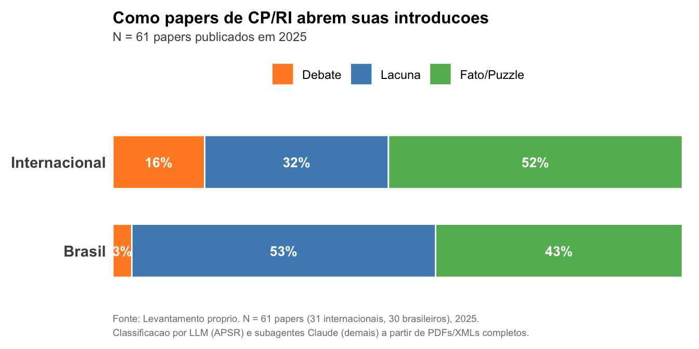
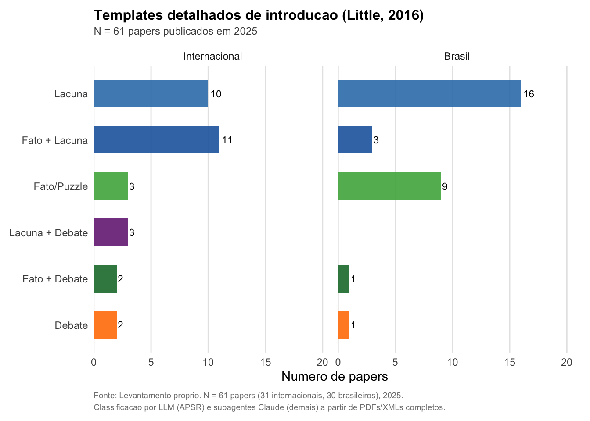
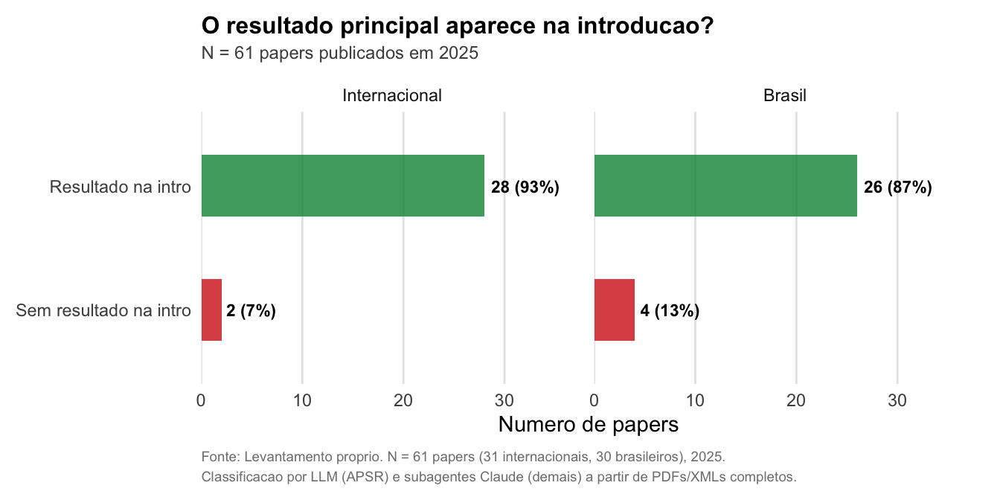
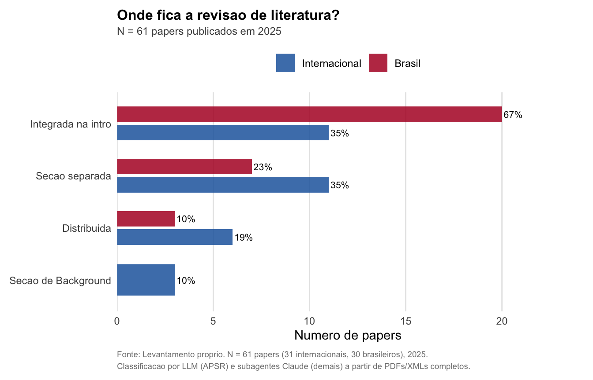

Capítulo 5 Redação Acadêmica
Os principais journals acadêmicos rejeitam mais de 90% dos manuscritos que recebem (Edmans 2025). Uma parte dessas rejeições ocorre antes mesmo de o paper chegar a um parecerista: o editor lê a introdução, não entende a contribuição, e decide que o manuscrito não merece o tempo de um parecerista. Saber analisar dados é necessário; saber comunicar o que você encontrou é o que transforma análise em publicação.
Objetivos do capítulo
- Conhecer a estrutura de um artigo científico
- Desenvolver habilidades de leitura crítica de papers
- Escrever de forma clara e objetiva
- Construir argumentos com evidências
- Entender como conectar o processo de análise (centrado na nula) com a narrativa do paper (centrada na alternativa)
5.1 Como ler um paper acadêmico
Ler papers acadêmicos é uma habilidade que se aprende com prática. Keshav (2007) propõe o método de três passagens:
Primeira passagem (5-10 minutos): Ler título, abstract, introdução e conclusão. Olhar os títulos das seções. Passar os olhos pelas referências. Ao final, você deve conseguir responder os “5 Cs”: Category (que tipo de paper é?), Context (com quais outros papers se relaciona?), Correctness (as premissas parecem válidas?), Contributions (quais as contribuições?), Clarity (está bem escrito?).
Segunda passagem (até 1 hora): Ler com mais atenção, ignorando detalhes técnicos como provas. Anotar pontos-chave, marcar referências relevantes. Ao final, você deve conseguir resumir o argumento principal para outra pessoa.
Terceira passagem (4-5 horas): Tentar “recriar” virtualmente o paper — replicar mentalmente o que os autores fizeram. Isso revela premissas implícitas, pontos fracos, e técnicas que você pode incorporar ao seu próprio trabalho.
Para a maioria dos papers que você encontra, a primeira passagem é suficiente. A segunda passagem é para papers relevantes ao seu trabalho. A terceira é para papers que você precisa entender profundamente — como o artigo que está replicando ou o paper contra o qual está argumentando.
5.2 O que faz um paper publicável
Antes de discutir a estrutura de um artigo, vale perguntar: o que um editor procura ao decidir se um manuscrito merece ser enviado para pareceristas? Edmans (2025) propõe que todo paper acadêmico é avaliado em três dimensões: contribuição, execução e exposição.
A contribuição é o critério mais importante — e o mais difícil de corrigir depois que o projeto começou. A pergunta central é a de King (2006): “whose mind are you going to change about what?” (“a mente de quem você vai mudar, e sobre o quê?”). Um paper precisa atualizar as crenças do leitor informado. Se a comunidade já acredita no que você está mostrando, a contribuição é pequena — mesmo que a análise seja impecável.
Isso implica que a contribuição depende do estado da literatura: um resultado que seria trivial em uma área pode ser transformador em outra. Edmans (2025) lista as razões mais comuns de rejeição ligadas à contribuição: o resultado não é original, não é importante, a hipótese é pouco clara, os achados não generalizam, ou o paper considera apenas um lado de um trade-off sem reconhecer os custos. Os próprios journals explicitam critérios semelhantes. De modo geral, os principais periódicos de ciência política esperam que o manuscrito faça uma contribuição teórica ou empírica clara, apresente um argumento bem construído e demonstre rigor metodológico.
A execução diz respeito à qualidade da análise: os dados são adequados, a estratégia de identificação é convincente, os resultados são robustos? Falhas de execução são mais fáceis de corrigir que falhas de contribuição — um parecerista pode sugerir testes adicionais, mas dificilmente consegue transformar uma pergunta irrelevante em uma relevante.
A exposição é como o paper comunica seus achados. Um argumento forte pode ser rejeitado se o leitor não conseguir entendê-lo. Clareza não é um extra — é condição necessária. Como veremos nas próximas seções, a forma como você estrutura a introdução, apresenta os resultados e organiza a revisão de literatura são decisões de exposição que afetam diretamente a percepção de contribuição e execução.
5.3 Estrutura de um artigo científico
5.3.1 Introdução
A introdução é a parte mais importante do paper. Se o parecerista não entender o ponto principal nas primeiras páginas, o paper será rejeitado — independentemente da qualidade da análise (Little 2016; King 2006).
A ideia de que as primeiras linhas precisam capturar o leitor não é exclusiva da academia. Alguns dos romances mais célebres da literatura abrem com frases que prendem a atenção imediatamente:
“Todas as famílias felizes se parecem entre si; as infelizes são infelizes cada uma à sua maneira.” — Tolstói, Anna Kariênina (1875; trad. João Gaspar Simões, Ed. Nova Aguilar, 2004)
“Quando certa manhã Gregor Samsa acordou de sonhos intranquilos, encontrou-se em sua cama metamorfoseado num inseto monstruoso.” — Kafka, A Metamorfose (1915; trad. Modesto Carone)
“Muitos anos depois, diante do pelotão de fuzilamento, o Coronel Aureliano Buendía havia de recordar aquela tarde remota em que seu pai o levou para conhecer o gelo.” — García Márquez, Cem Anos de Solidão (1967; trad. Eric Nepomuceno, Ed. Record, 2019)
Em cada caso, a abertura estabelece uma tensão ou um fato surpreendente que faz o leitor querer continuar. Um paper acadêmico opera sob a mesma lógica: as primeiras frases precisam convencer o leitor — que neste caso é um editor ou parecerista ocupado — de que vale a pena investir tempo no resto do texto.
Na ciência política, boas introduções fazem exatamente isso. Vejamos alguns exemplos. Alesina e colaboradores abrem um artigo sobre a origem das normas de gênero com uma frase que anuncia o escopo e a ambição do estudo:
“This study examines an important deeply held belief that varies widely across societies: the appropriate or natural role of women in society.” — Alesina, Giuliano e Nunn, “On the Origins of Gender Roles: Women and the Plough”, Quarterly Journal of Economics, 2013.
Alesina e Spolaore também abrem com fatos concretos — neste caso, um panorama de eventos recentes — e só então revelam o puzzle:
“In the last few years national borders have been redrawn to an extent that is rather exceptional for modern peacetime history. On the one hand, several countries have disintegrated (the former Soviet Union, Yugoslavia, and Czechoslovakia) (…) On the other hand, Germany has reunified, and the European Union is moving toward economic integration (…) On balance, one can detect a tendency toward political separatism with economic integration.” — Alesina e Spolaore, “On the Number and Size of Nations”, Quarterly Journal of Economics, 1997.
Bates (2025) segue a mesma lógica, abrindo com um episódio específico — as negociações de paz na Colômbia e a ameaça do Tribunal Penal Internacional:
“In 2012, the peace negotiations between the Colombian government and the Revolutionary Armed Forces of Colombia (FARC) became public knowledge (…) the International Criminal Court’s Office of the Prosecutor released an unprecedented report (…) with a thinly veiled threat: peace without accountability could lead to ICC intervention.” — Bates, “Threats and Commitments: International Tribunals and Domestic Trials in Peace Negotiations”, APSR, 2025.
Huff (2025) abre com um contraste que gera perplexidade:
“U.S. military commanders sometimes assigned war’s most dangerous tasks to Black soldiers (…) These battlefield assignments indicate that officers at times treated Black soldiers as expendable, or at the extreme as cannon fodder. On the other hand, myriad examples suggest that military commanders steered Black service members away from the frontlines (…) How does race affect the way commanders employ soldiers during wartime, and in turn who bears the costs of conflict?” — Huff, “Racial Inequality in War”, APSR, 2025.
Em todos esses casos, o leitor termina o primeiro parágrafo querendo saber a resposta. É isso que uma boa introdução faz.
Little (2016) analisou as introduções de artigos publicados nos principais journals de ciência política e identificou três templates recorrentes. Praticamente toda introdução pode ser classificada como uma variação ou combinação destes três:
- Template 1 — Fato/Puzzle: Abre com um fato ou padrão interessante sobre o mundo, mostra que a literatura existente não explica bem esse fato, e descreve como o paper oferece uma explicação melhor.
- Template 2 — Lacuna: Declara que o tema é importante e já foi estudado, identifica algo que falta ou está errado na literatura, e descreve como o paper preenche essa lacuna.
- Template 3 — Debate: Apresenta teorias ou achados empíricos que parecem contraditórios, e mostra como o paper resolve essa tensão.
Muitos papers usam combinações desses templates. Por exemplo, abrir com um fato surpreendente (Template 1) e depois mostrar que a literatura não o explica (Template 2).
Para verificar como esses templates aparecem na prática, classificamos 61 papers publicados recentemente em journals internacionais e brasileiros de CP/RI. Antes de olhar a figura abaixo, tente adivinhar: qual template você acha mais comum em papers brasileiros? E em internacionais? A Figura 5.1 mostra a distribuição.

Figure 5.1: Templates de introducao observados em papers publicados de CP/RI (2025). Papers brasileiros concentram-se em Lacuna; internacionais distribuem entre Fato/Puzzle e Lacuna, com mais Debate.
Observamos que papers brasileiros usam mais o template de Lacuna (“o tema é importante, mas falta estudar X”), enquanto papers internacionais usam mais frequentemente Fato/Puzzle como abertura. Vale notar que na prática muitos papers combinam elementos de mais de um template — os chamados templates híbridos. A Figura 5.2 mostra essa decomposição.

Figure 5.2: Templates detalhados. Papers internacionais usam frequentemente templates hibridos, combinando fato/puzzle com lacuna. Papers brasileiros usam mais templates puros.
Independentemente do template, toda introdução precisa cumprir três funções (Little 2016):
- Apresentar o tema de forma que capture a atenção do leitor.
- Mostrar que o trabalho existente é incompleto ou incorreto.
- Descrever o que o paper faz e o que encontra.
Um aspecto que distingue os papers publicados em journals internacionais é a clareza com que comunicam a contribuição já na introdução. Não basta dizer “contribuímos para a literatura de X” — é preciso dizer o que o leitor deveria acreditar de diferente após ler o paper, e idealmente quanto muda. A Figura 5.3 mostra essa diferença.
Figure 5.3: Clareza da comunicacao de contribuicao na introducao. A maior diferenca entre internacionais e brasileiros esta aqui: 71% dos internacionais comunicam o que muda e quanto, vs. 17% dos brasileiros.
Os números são úteis, mas como essas frases de contribuição se parecem na prática? A Tabela 5.1 mostra exemplos reais extraídos de papers publicados na APSR em 2025, classificados pelo nível de clareza.
| Paper | Clareza | Frase-chave da introdução |
|---|---|---|
| Byun (2025) | O que + Quanto | To an extent seldom recognized, then, a key element in the liberal international order’s foundation was a carefully crafted display of shockingly lethal violence. Only after clarifying the atomic b… |
| Conevska (2025) | O que + Quanto | Our findings show high levels of presidential party loyalty in state candidate elections with party labels (state partisan offices), slightly weaker levels in local candidate elections with party l… |
| DIXIT (2025) | O que + Quanto | In these villages, welfare reduced borrowing from caste members by over 40%. It also increased meal sharing, lowered the likelihood that most or all of respondents’ friends were of the same caste b… |
| Acs (2025) | Só o que | The article then interprets the results, discussing both why some agencies have significantly changed in their estimated ideology over time and the substantial increase in regulatory productivity t… |
| Barcel (2025) | Só o que | Taken together, these meta-analyses challenge optimistic perspectives that emphasize the civic benefits of wartime exposure. While exposure to wartime violence can increase certain forms of engagem… |
Note como os papers com “O que + Quanto” não apenas dizem o que encontram, mas dão ao leitor uma noção de magnitude — o quanto as crenças deveriam mudar. Já os papers com “Só o que” informam a direção do achado sem quantificar, e os “Vagos” ficam em generalidades como “contribuímos para a literatura de X”.
Outra característica observada é que a grande maioria dos papers publicados — tanto internacionais quanto brasileiros — apresenta o resultado principal já na introdução, antes de detalhar a metodologia. Isso é consistente com a estrutura de “pirâmide invertida”: a informação mais importante vem primeiro.

Figure 5.4: Proporcao de papers que apresentam o resultado principal na introducao.
5.3.2 Revisão de literatura
Onde fica a revisão de literatura? Muitos alunos aprendem que o paper deve ter uma seção separada intitulada “Revisão de Literatura”. Mas na prática, a maioria dos papers publicados nos journals que analisamos não segue esse padrão.

Figure 5.5: Localizacao da revisao de literatura. A maioria dos papers integra a revisao na introducao ou a distribui pelo texto. Nenhum paper internacional usa secao intitulada ‘Literature Review’.
Observamos que a forma mais comum é integrar a revisão de literatura na própria introdução, especialmente nos journals brasileiros. Papers internacionais usam mais seções separadas, mas raramente com o título “Literature Review” — preferem títulos temáticos como “Theoretical Framework” ou nomes que refletem o conteúdo substantivo.
5.3.3 Metodologia
A seção de metodologia descreve os dados e a estratégia empírica de forma suficientemente detalhada para que o leitor avalie a validade dos resultados — e, idealmente, para que outro pesquisador consiga replicar a análise.
Dois erros comuns. O primeiro é confundir dados com evidência. Como observa Edmans (2025), dados são insumo; evidência é o que os dados dizem à luz de uma pergunta e de uma estratégia de identificação. Apresentar uma base de dados detalhada não substitui a necessidade de explicar por que aqueles dados permitem responder à pergunta. O segundo erro é omitir limitações da estratégia empírica. Todo desenho de pesquisa tem fraquezas — é melhor reconhecê-las explicitamente do que esperar que o parecerista as encontre.
Na prática, a seção de metodologia deve responder: (1) quais são os dados e de onde vêm? (2) qual é a unidade de análise? (3) como as variáveis-chave são operacionalizadas? (4) qual é a estratégia de identificação — isto é, por que podemos interpretar a associação como evidência da relação proposta? (5) quais são as ameaças à validade e como o paper lida com elas?
5.3.4 Resultados
A seção de resultados deve focar em quantidades de interesse — efeitos substantivos que o leitor consiga interpretar — e não em listas de coeficientes (King 2006). Dizer que “o coeficiente de X é 0,23, significativo a 5%” é menos informativo do que dizer “um aumento de um desvio-padrão em X está associado a um aumento de 3 pontos percentuais na probabilidade de Y, o que equivale a cerca de metade da diferença média entre homens e mulheres na amostra”.
Tabelas e figuras devem ser autocontidas: o leitor deve entender o que está sendo mostrado sem precisar voltar ao texto. Isso significa incluir títulos descritivos, notas de rodapé com informações sobre a amostra e as variáveis, e indicar claramente o que cada coluna ou eixo representa.
Evite apresentar dezenas de especificações sem guiar o leitor sobre quais são as principais e por quê. Um paper com 15 tabelas no apêndice mas sem uma narrativa clara sobre o resultado principal não comunica — apenas despeja dados.
Exemplo: do coeficiente à interpretação substantiva
Antes: “O coeficiente da variável escolaridade é 0,47 (p < 0,01), o que indica uma relação estatisticamente significativa com a participação política.”
Depois: “Concluir o ensino superior está associado a um aumento de 12 pontos percentuais na probabilidade de participar de pelo menos uma atividade política no último ano — o equivalente à diferença observada entre as faixas de renda mais alta e mais baixa da amostra.”
A segunda versão diz a mesma coisa, mas o leitor não precisa saber o que “0,47” significa em termos práticos. A comparação com a diferença de renda dá uma âncora para avaliar a magnitude.
5.3.5 Conclusão
A dúvida mais comum sobre a conclusão é: como ela se diferencia da introdução, se ambas falam da contribuição do paper? A resposta está na direção do movimento. A introdução afunila: parte de um tema amplo, identifica uma lacuna ou puzzle, e chega à contribuição específica. A conclusão faz o caminho inverso — abre: parte dos achados específicos e se expande para implicações mais amplas (Nikolov 2023).
Na prática, uma boa conclusão contém quatro elementos (Nikolov 2023):
Síntese dos achados principais — não repetir a introdução, mas oferecer um resumo que incorpore o que a análise revelou. A introdução diz “vamos mostrar X”; a conclusão diz “mostramos X, e o que aprendemos com isso é Y”. Compare seus resultados com a literatura existente e explique por que são relevantes.
Limitações e ressalvas — todo desenho de pesquisa tem fraquezas. King (2006) enfatiza: é melhor reconhecê-las explicitamente do que esperar que o parecerista as encontre. Apresente as limitações com honestidade, mas explique por que não invalidam a contribuição principal.
Direções para pesquisa futura — mas apenas se forem específicas o bastante para que alguém as execute. “Mais pesquisa é necessária” não ajuda ninguém. “Um experimento que manipule X em um contexto onde Y não se aplica testaria diretamente nosso mecanismo” é útil.
Implicações práticas ou de política pública — se aplicável. Edmans (2025) alerta que implicações vagas como “nossos resultados são relevantes para gestores, investidores e reguladores” não convencem. Se vai mencionar implicações, diga quais especificamente.
A conclusão deve ser a seção mais curta do paper — tipicamente uma página para um artigo de vinte (Nikolov 2023). Little (2016) observa que muitos leitores não chegam até ela, o que reforça a importância de a introdução já conter o resultado principal. A conclusão é para quem leu o paper inteiro e quer consolidar o que aprendeu.
Para tornar essa distinção mais concreta, analisamos as introduções e conclusões de cinco papers publicados recentemente em journals internacionais de ciência política.2 A tabela abaixo resume o que encontramos:
| Elemento | Na introdução? | Na conclusão? |
|---|---|---|
| Achado principal / contribuição | Sim (5/5) | Sim (5/5) — mas com framing diferente |
| Lacuna na literatura | Sim (5/5) — como motivação | Não |
| Comparação dos resultados com a literatura | Não | Sim (5/5) — posiciona achados contra trabalhos existentes |
| Limitações do próprio estudo | Não (5/5) | Sim (5/5) |
| Direções de pesquisa futura | Não (5/5) | Sim (5/5) |
| Implicações de política pública | Não (4/5) | Sim (4/5) |
| Literaturas novas (não citadas na intro) | Não | Sim (3/5) |
Note a assimetria: a introdução identifica lacunas na literatura para motivar o estudo; a conclusão compara os resultados com a literatura para avaliar o que mudou. Por exemplo, Barceló (2025) abre a introdução citando a meta-análise otimista de Bauer et al. (2016) como lacuna a ser preenchida, e na conclusão reposiciona seus achados contra essa mesma meta-análise: “These findings introduce a note of caution to earlier optimistic interpretations.” Geys e Sørensen (2025) identificam na introdução três problemas dos estudos existentes (shocks grupais, tratamentos compostos, dados de survey) e na conclusão concluem que “the much larger positive association between income and turnout observed in previous work must be predominantly attributed to deeper-rooted factors” — uma interpretação que vai além do que a introdução prometia.
As limitações seguem o mesmo padrão: ausentes da introdução, presentes na conclusão. Mailhot e Karim (2025) reconhecem que “our analyses treat civilians’ preferences as static. While this is useful for an initial conceptual and empirical exploration, state building is a dynamic process.” Geys e Sørensen notam que “our data lack information about individuals’ membership in specific households, which precluded an analysis of potential intra-household spillover effects.” Em ambos os casos, a limitação é apresentada junto com uma explicação de por que não invalida a contribuição — e frequentemente acompanhada de uma sugestão de pesquisa futura que endereçaria o problema.
Dois erros comuns a evitar. O primeiro é copiar a introdução com pequenas alterações — se o leitor percebe que já leu aquilo, a conclusão perdeu sua função. O segundo é introduzir argumentos ou evidências novas que deveriam ter aparecido no corpo do texto.
5.4 Descoberta versus narrativa: da hipótese nula ao paper
O processo de análise estatística e o processo de escrita de um paper seguem lógicas diferentes, e confundi-las é uma das maiores fontes de erro para pesquisadores iniciantes.
Na análise, trabalhamos no framework do teste de hipóteses: formulamos uma hipótese nula (tipicamente “não há efeito”), coletamos dados e verificamos se a evidência é suficiente para rejeitá-la. O foco está na nula.
No paper, a narrativa é tipicamente construída em torno da hipótese alternativa — a teoria que o pesquisador quer defender. O artigo diz “proponho que X causa Y” e apresenta evidência a favor. É raro ver um paper cuja contribuição central seja “não rejeitei a hipótese nula”, e isso cria um viés de publicação (o chamado file drawer problem): estudos com resultados nulos tendem a ficar na gaveta, distorcendo a literatura publicada.
No entanto, resultados nulos podem ser informativos e deveriam ser publicados. A pergunta-chave é: quanto esse resultado atualiza as crenças do leitor? Se a literatura ou o senso comum assumia que X causa Y, e um estudo bem desenhado mostra que o efeito é nulo ou muito menor do que se supunha, isso muda a prior da comunidade — e portanto contribui. Por outro lado, se ninguém esperava um efeito e você confirma que não há, a contribuição é pequena. É verdade que ausência de evidência não é o mesmo que evidência de ausência, mas um resultado nulo em um estudo com poder adequado é informativo quando desafia crenças estabelecidas.
Como conectar as lógicas da análise e do paper? Primeiro, separar claramente o processo de descoberta (exploração dos dados, análise) do processo de comunicação (escrita do paper). Segundo, entender que não rejeitar a nula não invalida o paper — pode ser um resultado informativo se o estudo tinha poder suficiente para detectar um efeito relevante.
5.4.1 A importância de descartar explicações alternativas
Uma narrativa empírica sólida não se limita a mostrar evidência a favor da hipótese preferida. Ela precisa também mostrar que as explicações alternativas mais plausíveis não dão conta dos dados. Isso é o que se chama de descarte de alternativas (ruling out).
Na prática, isso significa: (1) identificar as principais explicações rivais para o padrão observado, (2) derivar previsões empíricas que distinguam a sua teoria das rivais, e (3) mostrar que os dados são consistentes com a sua teoria mas não com as alternativas. Esse exercício fortalece enormemente a credibilidade do argumento — e é o que separa um paper descritivo de um paper com contribuição causal ou teórica.
5.5 Dicas de escrita acadêmica
Uma ideia por parágrafo. Se você não consegue resumir o parágrafo em uma frase, ele provavelmente está fazendo coisas demais. A primeira frase do parágrafo deve dizer do que ele trata — estrutura de pirâmide invertida.
Voz ativa. “Encontramos que X causa Y” é mais direto que “Foi encontrado que Y é causado por X.” Voz passiva tem seu lugar (quando o agente é irrelevante), mas o abuso de passiva é um dos problemas mais comuns em textos acadêmicos.
Não esconda fraquezas. King (2006) enfatiza: pareceristas vão encontrar os problemas do seu paper de qualquer forma. É melhor reconhecê-los e explicar por que não invalidam a contribuição do que fingir que não existem. Transparência aumenta a credibilidade.
Título como haiku. O título deve ser curto e informativo. King (2006) sugere pensar no título como um haiku: cada palavra deve justificar sua presença. Evite títulos que começam com “An Analysis of…” ou “A Study of…” — diga o que você encontrou, não o que você fez.
Evite jargão desnecessário. Se um termo técnico pode ser substituído por uma palavra comum sem perda de precisão, substitua. Jargão é útil quando ganha precisão; é prejudicial quando serve apenas para sinalizar pertencimento a um grupo.
Tabelas e figuras autocontidas. Muitos leitores olham as figuras antes de ler o texto. Cada tabela e figura deve ter título descritivo, notas explicativas e indicação clara das variáveis. O leitor deve entender o ponto principal sem consultar o texto.
Corte sem piedade. Primeiros rascunhos quase sempre têm texto dispensável. Releia cada frase e pergunte: “se eu tirar isso, o leitor perde algo?” Se a resposta é não, tire. Frases como “é importante notar que”, “vale ressaltar que”, “cabe mencionar” quase nunca são necessárias.
Evite linguagem dramática. Palavras como “obviamente”, “claramente”, “sem dúvida” geralmente sinalizam o oposto: se fosse tão claro, não precisaria ser dito. Da mesma forma, evite superlativos sem evidência: “o mais importante”, “revolucionário”, “inédito”.
5.6 Exercícios
Classificar uma introdução. Escolha um paper publicado em um journal de ciência política (pode ser da lista de referências deste capítulo ou um paper que você esteja lendo para outra disciplina). Leia a introdução e responda: (a) qual template de Little o paper usa — Fato/Puzzle, Lacuna, Debate, ou híbrido? (b) identifique as frases que cumprem as três funções: capturar atenção, mostrar lacuna, descrever contribuição. (c) a introdução apresenta o resultado principal? Se sim, copie a frase.
Avaliar a clareza da contribuição. Selecione 3 papers de journals diferentes (idealmente um internacional e dois brasileiros). Para cada um, encontre a frase na introdução que melhor comunica o que o leitor deveria acreditar de diferente após ler o paper. Classifique cada frase como “O que + Quanto” (diz o que muda e dá magnitude), “Só o que” (diz o que muda sem quantificar), ou “Vago” (contribuição genérica). Compare os padrões entre journals.
Reescrever uma introdução. Tome um paper cuja introdução você classificou como “Vaga” no exercício anterior (ou peça ao professor um exemplo). Reescreva o primeiro parágrafo usando o template de Fato/Puzzle de Little: abra com um fato concreto, mostre que a literatura existente não o explica bem, e descreva como o paper oferece uma explicação melhor. Limite-se a 150-200 palavras.
“Whose mind are you going to change?” Pense no tema do seu próprio trabalho de pesquisa (ou escolha um tema que lhe interesse). Responda em no máximo três frases: (a) Qual é a crença predominante sobre o tema? (b) O que seu paper mostraria de diferente? (c) Por que isso importa — quem se beneficia de saber isso? Se você não conseguir responder essas perguntas de forma clara, o projeto provavelmente precisa ser afinado antes de começar a escrever.
Afunilar e abrir. Considere um estudo que investiga se ganhar na loteria faz as pessoas votarem mais, usando dados de registro eleitoral da Noruega. O resultado principal é que ganhos inesperados de renda têm um efeito causal pequeno sobre o comparecimento eleitoral. (a) Escreva um parágrafo de introdução que afunile: comece com o tema geral (renda e participação política), identifique o problema dos estudos existentes, e chegue à contribuição específica deste estudo. (b) Escreva um parágrafo de conclusão que abra: comece com o achado específico e se expanda para implicações mais amplas (o que isso significa para políticas de combate à desigualdade política?). Limite cada parágrafo a 100-150 palavras.
Afunilar e abrir (II). Considere um estudo experimental na Libéria que investiga as preferências de civis sobre quem deve conduzir a reconstrução do Estado após a guerra civil — se a ONU, os EUA, a China, ou atores locais. O resultado principal é que civis preferem a ONU e os EUA, instituições de segurança, e envolvimento indireto (assistência técnica, não controle direto). (a) Escreva um parágrafo de introdução que afunile do tema geral (reconstrução pós-conflito) até a contribuição específica. (b) Escreva um parágrafo de conclusão que abra dos achados específicos para implicações para organizações internacionais e pesquisa futura.
Lacunas na introdução vs. comparação na conclusão. Leia a introdução de um paper empírico de ciência política. Identifique: (a) qual lacuna ou limitação da literatura existente o paper usa como motivação; (b) quais trabalhos específicos são citados como insuficientes ou incompletos. Depois leia a conclusão do mesmo paper e identifique: (c) como o paper posiciona seus resultados contra a literatura citada na introdução — os resultados confirmam, qualificam ou contradizem o que se sabia antes? (d) há literaturas novas na conclusão que não apareceram na introdução? Compare os dois movimentos: a introdução diz “a literatura não sabe X”; a conclusão diz “agora sabemos X, e isso muda o que pensávamos sobre Y”.
Lacunas vs. comparação (II). Considere o seguinte cenário: um paper investiga se a violência da guerra civil aumenta o engajamento cívico. Uma meta-análise anterior (Bauer et al., 2016) concluiu que sim — a violência promove cooperação e participação. O novo estudo, com uma amostra muito maior (172 estudos), encontra que a violência aumenta certas formas de engajamento mas não promove confiança generalizada, e endurece atitudes contra grupos rivais. (a) Escreva 2-3 frases de introdução que identifiquem a lacuna: o que há de limitado no estudo anterior? (b) Escreva 2-3 frases de conclusão que comparem os novos resultados com os de Bauer et al.: onde confirmam, onde qualificam, onde contradizem?
References
Os papers analisados são: Bates (2025, APSR), Barceló (2025, APSR), Geys e Sørensen (2025, BJPS), DeLuca, Moskowitz e Schneer (2025, AJPS) e Mailhot e Karim (2025, IO).↩︎